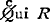

CATVLLI CARMINA
Catulli (-lis La2) Veronensis liber incipit ad Cornelium BGR Ven Laur. 33.12: Catulli Veronensis poetae liber incipit A et Santenianus: Catulli Veronensis ad Cornelium La1: Catullus Veronensis poeta O: Catuli Veronensis poete cla liber incipit a: Q. Catuli Veronensis liber incipit ad Cornelium I D: Q. VALERI. CATVLLI. VERONENS. AD CORN. NEPOTEM. LIBER C
I
Qui dono lepidum nouum libellum
Corneli, tibi: namque tu solebas
meas esse aliquid putare nugas;
5iam tum cum ausus es unus Italorum
omne acuum tribus explicare cartis
doctis, Iuppiter, et laboriosis.
quare habe tibi quidquid hoc libelli
qualecumque; quod, o patrona uirgo,
10I 1 Qui ADh Gulielmus Pastrengicus (1295-1360 A.D.) de originibus rerum p. 88b: cui GO3 (non qui) RBCLa1 2 arido codd.: arida Pastrengicus, fortasse ex Serui adnotatione ad Aen. xii. 587 ubi tradit Catullum pumicem dixisse feminino
5 tum h: tamen Ω es h: est Ω
8 tibi habe quicquid Ω haec O libelli al. mei G 9 quod] quidem D, Bodl. Lat. Class. e. 15, marg. R o add. Perusinus (p): om. Ω patroni ut ergo Bergk 10 perire O
3. Sic enim monstrantibus Elmero Merrill et E. B. Nicholson nunc lego quod in G et O scriptum est.
II
Passer, deliciae meae puellae,
quicum ludere, quem in sinu tenere,
qui primum digitum dare atpetenti
et acris solet incitare morsus,
5carum nescio quid libet iocari,
†credo ut cum grauis acquiescet ardor:†
tecum ludere sicut ipsa possem
10et tristis animi leuare curas!
tam gratum est mihi quam ferunt puellae
II Fletus passeris Lesbie Ω: spatium unius uersus in O titulo tamen carens
3 qui GODBLa1 (m. pr.): {Q̸c}uiA R: cui ha, marg. O: quoi C at petenti O: at petenti al. patenti Ven. et sic G prius, quamuis post in parenti mutatum fuerit: appetenti Ra 6 karum GO libet GO sed iubet marg. O: lubet Baehrens 8 sic Ω sed cum om. Ba credo, ut tum g. acquiescat a. Baptista Guarinus: credo, et cum (quo Postgate) grauis acquiescit (-at Postgate) ardor ego olim: quaerit quo g. acquiescat a. E. M. Thompson. Omittendum esse credo ratus est Tartara tamquam additum ab eo qui dubitationem suam de scriptura sic declarauit 9 ludere (suprascr. al. luderem) G: luderem D Post 10 uidentur excidisse quaedam, uelut tecum ludere, sic ut ipsa ludit: sed interstitii uestigia non habent codices 11 est omittebat Conington
13 ligatam ACBLa1Dah Priscianus: negatam al. ligatam G: negatam O: ligatam marg. negatam R, sed ut ante ligatam uideatur aliquid erasum: cf. Carm. Epigr. 1504.49 Buech. zonulam ut soluas diu ligatam
A. 
III
Lugete, o Veneres Cupidinesque,
et quantum est hominum uenustiorum.
passer mortuus est meae puellae,
passer, deliciae meae puellae.
5quem plus illa oculis suis amabat:
nam mellitus erat suamque norat
ipsam tam bene quam puella matrem.
nec sese a gremio illius mouebat,
sed circumsiliens modo huc modo illuc
10ad solam dominam usque pipilabat.
qui nunc it per iter tenebricosum
illuc, unde negant redire quenquam.
at uobis male sit, malae tenebrae
Orci, quae omnia bella deuoratis:
15tam bellum mihi passerem abstulistis.
III cum II continuatum habent Ω, nullo titulo nec spatio tituli
4 om. ABCLa1a 7 ipsa ABC
9 circum siliens GR: circum silens al. siliens O 10 pipilabat Da: piplabat Ω: pipiabat marg. h Voss
11 tenebricosum h2: tenebrosum Ω 12 illuc marg. O: illud Ω Carm. Epigr. 1504.11 Buech. Unde fata negant redire quemquam
14 Orciquae R m. pr.: Orcique al. quae G: Orcique COVen bella al. pulcra G: bella i. pulcra O
16 uae... uae miselle scripsi ex eo quod habent Ω 16 Bonum factum male bonus ille passer: correxerunt ex Att. xv.1.1 o factum male, o miselle passer: cf. Carm. Epigr. 1512.4.7 Buech. o factum male Myia quod peristi: proh miselle passer Bapt. Guarinus: pro f. m. pro pusille Froehlich: io miselle p. Lachmann 17 tua (suprascr. quia) O 18 turgidoli R m. pr.
IV
Phasellus ille, quem uidetis, hospites,
neque ullius natantis impetum trabis
nequisse praeterire, siue palmulis
5opus foret uolare siue linteo.
et hoc negat minacis Adriatici
negare litus insulasue Cycladas
Rhodumque nobilem horridamque Thraciam,
Propontida trucemue Ponticum sinum,
10ubi iste post phasellus antea fuit
comata silua: nam Cytorio in iugo
loquente saepe sibilum edidit coma.
Amastri Pontica et Cytore buxifer,
tibi haec fuisse et esse cognitissima
15ait phasellus: ultima ex origine
tuo stetisse dicit in cacumine,
tuo imbuisse palmulas in aequore,
et inde tot per impotentia freta
herum tulisse, laeua siue dextera
20uocaret aura, siue utrumque Iuppiter
simul secundus incidisset in pedem.
neque ulla uota litoralibus deis
sibi esse facta, cum ueniret a marei
nouissimo hunc ad usque limpidum lacum.
25sed haec prius fuere: nunc recondita
IV DE PHASELLO (-ELO VenR) Ω: spatium unius uersus in O
1 Phaselus DaVen 2 aiunt Ω 2 celerrimum (celerimum O) Ω 3 illius Ω tradis h2: tardis Ω 4 neque esse Ω sine Ω: siue R 5 sine Ω: siue R
6 haec O negant R mina ei B m. pr., GOVenDah: mina ci Cod. Vat. 1630: mina||| dein minacis R 7 insula uegeladas O 8 tractam Ω sed traciam corr. R et corr. La1 11 silua om. O, add. in marg. cit(th C)eorio Ω sed citeono Oh2
13 citheri GO et R m. pr. 14 cognitissima ah2: cognotissima Ω 17 tuo O: tuas cett. 18 inte R 19 herum GOR 20 uocare cura ABCGOh: uocaret ura R m. pr.: uocaret aura corr. R
22 litoralibus GR litt. OBAC diis Ω sed e iam superscripta in La1 23 a marei Lachm.: amaret Ω et, ut videtur, R ante quam in amari mutatum erat: amare ah2 24 nouissimo a: nouissime Ω, Munro
25 hoc CGVen R m. pr. 27 Castor D, Diomedes p. 344 Keil: Castorum R m. pr. B et La1 nondum mutati: Castrum al. Castorum G: Castrum O
V
Viuamus, mea Lesbia, atque amemus,
soles occidere et redire possunt:
5nobis cum semel occidit breuis lux,
nox est perpetua una dormienda.
da mi basia mille, deinde centum,
dein mille altera, dein secunda centum,
deinde usque altera mille, deinde centum.
10dein, cum milia multa fecerimus,
conturbabimus illa, ne sciamus,
V AD LESBIAM Ω: in O spatium unius uersus sine titulo
3 extime(ne O)mus Ω
5 nobiscum Ω
8 deinde mi//// altera da//// secunda centum G, et sic R, nisi quod da post inlatum uidetur: deinde mille altera deinde secunda centum Oh2
10 deinde Ω 11 conturbauimus Ω nesciamus Ω 13 tantum corr. R, corr. La1: tantus CGOVen, R et La1 nondum mutati sciet Buecheler ex Priap. lii. 12
VI
nei sint illepidae atque inelegantes,
uelles dicere, nec tacere posses.
5scorti diligis: hoc pudet fateri.
nam te non uiduas iacere noctes
nequiquam tacitum cubile clamat
Sertisque ac Syrio fraglans oliuo,
puluinusque peraeque et hic et ille
10attritus, tremulique quassa lecti
nam nil uerpa ualet, nihil tacere.
cur? non tam latera ecfututa pandas,
nei tu quid facias ineptiarum.
15quare, quidquid habes boni malique,
VI cum V continuatur in O: AD FLAVIVM cett.
2 nei Lachmann: ne Ω 3 uelis et possis Heinsius
5 hic O
7 nequiquam Haupt: nequicquam GVen et R, sed hi duo diuise: ne quid quam O 8 Sertisque Da: Sertis Ω nisi quod Sectis BLa1 ac Syrio Auantius: a sirio R m. pr.: asirio GO fraglans scripsi: flagrans GORVenBLa1: fragrans D et Laur. 33.12 9 et haec et illo O: et hec (suprascr. hic) et illo (suprascr. al. ille) GRVen Correxerunt et hic et illic (illi), et heic et illei Fort. et hoc (= huc) et illo 10 cassa D, Froehner: casa a (m. pr.)
12 nil uerpa ualet scripsi: inista preualet O: ni ista preualet GRVen: mi stupra ualet uir doctus in Ephem. Class. xxiv. p. 211 (stupra iam Scaliger) nil ista ualet Lachm.: nil stupra u. Haupt
13 sic Lachm.: cur non tam latera et futura panda Ω: et fututa h2 pandas h 14 nei Marcilius: nec Ω: ne a
15 quid quid O: quicquid Ω bonique malique O 17 uersum O: uersum (sic) R
VII
Quaeris, quot mihi basiationes
tuae, Lesbia, sint satis superque.
quam magnus numerus Libyssae harenae
5et Batti ueteris sacrum sepulcrum;
aut quam sidera multa, cum tacet nox,
furtiuos hominum uident amores;
10VII Spatium unius uersus in O titulo carens: AD LESBIAM cett.
1 quod GORLa1
3 libisse ORVen: lybisse G 4 lasarpici feris al. fretis GRVen: lasarpici fecis Oh2 tyrenis al. cyrenis GRVen: tyrenis OLa1, B m. pr. 5 oradum uel ora dum Ω 6 beati O; beati al. beari GRVen: brati a (m. pr.) 9 basiei O, et R m. pr.: basiei al. basia GVenC
VIII
Miser Catulle, desinas ineptire,
et quod uides perisse perditum ducas.
fulsere quondam candidi tibi soles,
cum uentitabas quo puella ducebat
5amata nobis quantum amabitur nulla.
ibi illa multa tum iocosa fiebant,
quae tu uolebas nec puella nolebat.
fulsere uere candidi tibi soles.
nunc iam illa non uolt: tu quoque inpotens noli,
10nec quae fugit sectare, nec miser uiue,
sed obstinata mente perfer, obdura.
uale, puella. iam Catullus obdurat,
nec te requiret nec rogabit inuitam.
at te dolebis, cum rogaberis nulla.
15scelesta †ne te†. quae tibi manet uita!
quis nunc te adibit? cui uideberis bella?
quem nunc amabis? cuius esse diceris?
VIII Spatium unius uersus in O titulo carens: AD SE IPSVM Ω
6 cum O: tam Scaliger
9 impotens noli Auantius: impote (inpote O) Ω
12 om. La1
14 nulla Ω
15 ne ter tibi quae Bodl. Lat. Class. e. 15: nec te Phil.: nocte Statius nullam... noctem Voss 18 cum labella O
IX
antistans mihi milibus trecentis,
uenistine domum ad tuos Penates
fratresque unanimos anumque matrem?
5uisam te incolumem audiamque Hiberum
narrantem loca, facta, nationes,
ut mos est tuus, applicansque collum
iucundum os oculosque suauiabor.
10IX AD VERAN(N)IVM Ω: spatium unius uersus in O
1 Verani a: Veranni BDGLa1Ohh2: Veramni AC e om. O 2 antistans Auantius: antistas Ω milibus O: millibus GRVen.
4 uno animo sanamque O: uno animo suamque al. sanam GVen anumque Faernus: senemque Auantius
9 suauiabor D: suabior Ω
X
scortillum, ut mihi tum repente uisum est,
non sane illepidum neque inuenustum.
5huc ut uenimus, incidere nobis
sermones uarii, in quibus, quid esset
iam Bithynia, quo modo se haberet,
et quonam mihi profuisset aere.
respondi id quod erat, nihil neque ipsis
10nec praetoribus esse nec cohorti,
cur quisquam caput unctius referret,
X cum IX continuant Ω nullo spatio relicto
1 Varus C: Varius GOR Ven La1: Verannius D 3 tunc ORVen Laur. 33.12 4 inlep. Lachm.
7 Iarbithinia O quomodo posse haberet Ω: corr. ed. pr. 8 ecquonam Statius: et quoniam al quonam GRVen: et quoniam OACDah2 aere a: here GOLa1ACD: hēre (= habere) Bh
9 neque in ipsis (suprascr. al. neque ipsis ñ) G: neque nec in ipsis OBCLa1: nec in ipsis al. neque ipsis R: nihil in ipsis Conington: nihil neque ipsi Traube 10 prius nec om. RVenACa sed RVen addunt in marg. hic Giri hoc praetore fuisse Traube 11 Cur q. c. u. referret? Munro 13 non al. nec GRVen: nec Oa: ne h2 facerent Da
‘at certe tamen,’ inquiunt ‘quod illic
15natum dicitur esse, comparasti
ad lecticam hominis.’ Ego, ut puellae
‘non’ inquam ‘mihi tam fuit maligne,
ut, prouincia quod mala incidisset,
20non possem octo homines parare rectos.’
at mi nullus erat neque hic neque illic,
fractum qui ueteris pedem grabati
in collo sibi collocare posset.
hic illa, ut decuit cinaediorem,
25‘quaeso’ inquit ‘mihi, mi Catulle, paulum
istos †commoda: nam† uolo ad Sarapim
deferri.’ ‘mane’ inquii puellae,
‘istud quod modo dixeram me habere,
30Cinna est Gaius, is sibi parauit.
uerum, utrum illius an mei, quid ad me?
utor tam bene quam mihi pararim.
15 asse Statius
21 nec hic neque illic GORVen 22 fractumque Ω
24 docuit Ω, corr. a sined. O 25 inquid O 26 com(m)oda nam codd. praeter Oh2: comodā nam O: comenda nam h2: commodum enim Hand: Istos da modo: nam Munro: commoda; eram (heram) uel commoneam ego sarapim D: sarapim (suprascr. al. e) G: serapim (ini O) RVenO 27 deferri ACD: deserti al. deferri GBRVen: deserti OLa1 mane inquii Statius: mane me inquit (-d O) Ω: minime Ald. I.: mi anime Bergk: meminei Munro 30 Cinna est Gaius Beroaldus: Cuma est grauis Ω 31 ad me Da et corr. R: a me Ω
32 paratis Statius
33 tu insulsa h: tu insula Ω: tulsa O et] hac D: ac a 34 negligentem Ω
XI |
XI AD FVRIVM ET AVRELIVM Ω: in O spatium non est, sed primo uersui adscriptum est = |
|
Furi et Aureli, comites Catulli, |
2 penetrabit ed. 1473: penetrauit Ω 3 ut GO Caesenas: et h2: ubi cett. coa Oh2 |
|
5
siue in Hyrcanos Arabesque molles, seu Sacas sagittiferosue Parthos, |
5 arabasue Oh2: arabaesque G: arabesque R cum plerisque 6 siue sagas (-x CGORa) Ω sagittiferosque D Lachm.: que om. a 7 qui B Phil. h: om. h2 |
|
siue trans altas gradietur Alpes, 10Caesaris uisens monimenta magni, |
8 Epra O 9 sui O latas Bh apes (suprascr. l) R 10 uidens ABCD: uissens h2 11 hor(r)ibilesque DGOh2: horribiles RVenACBLa1: horribile aequor Haupt: horribilem salum Munro: h. fretum Everett: horribilesque uitro (uel uultu) in- usque Palmer: horribilem sequi Housman, in quod ipse olim incideram, mutato uidens in nitens: fort. horribiles citroque ult|roque 12 mosque... britannos G. In Oh2 uersus incipit ab ultimosque (Vitimosque O) 13 fere Ω 14 temptare OVen: tentare GR et plerique |
|
omnia haec, quaecunque feret uoluntas caelitum, temptare simul parati, 15 |
|
|
cum suis uiuat ualeatque moechis, quos simul complexa tenet trecentos, nullum amans uere, sed identidem omnium 20 |
|
|
nec meum respectet, ut ante, amorem, qui illius culpa cecidit uelut prati |
22 qui BLa1Da, sed in B prius fuit cui: cui GORVenChh2 23 posquam RVenD |
XII
Marrucine Asini, manu sinistra
non belle uteris in ioco atque uino:
hoc salsum esse putas? fugit te, inepte:
5quamuis sordida res et inuenusta est.
non credis mihi? crede Pollioni
fratri, qui tua furta uel talento
mutari uelit: est enim leporum
10quare aut hendecasyllabos trecentos
exspecta, aut mihi linteum remitte,
quod me non mouet aestimatione,
uerum est mnemosynum mei sodalis.
nam sudaria Saetaba ex Hiberis
15XII AD MATRVCINVM ASIN[I]VM Ω: in G Asinium tantum est, in O spatium unius uersus titulo carens
1 Marrucine Parthenius: Matrucine Ω 2 ioco al. loco BGRVen: loco O 3 negleg. O: neglig. GR 4 salsum al. falsum G: falsum al. salsum ORVen: falsum ABCDLa1hh2
6 polioni h2a 7 frat̅ (frater) O 8 uoluit O: uolit Baehrens 9 dissertus O: difertus Passeratius
10 endeca sillabos GORLa1 11 expecta Ω 12 extimatione Ω 13 nemo est sinum O: est nemo sinum (sinunt BLa1hh2) cett.
14 settaba O: thessala D et Vat. 1630 ex Hiberis ed. pr.: exhibere Ω: ex Hibereis Lachmann: ex Hibero Owen 15 numeri al. muneri GCRVen: numeri OALa1 16 hec al. hoc R amem D: aḷmeni R: ameni GOCVen 17 ut h2: et Ω Ad hunc uersum respexit Plinius H. N. praef. I
XIII
Cenabis bene, mi Fabulle, apud me
paucis, si tibi di fauent, diebus,
si tecum attuleris bonam atque magnam
cenam, non sine candida puella
5et uino et sale et omnibus cachinnis.
haec si, inquam, attuleris, uenuste noster,
plenus sacculus est aranearum.
sed contra accipies meros amores
10seu quid suauius elegantiusue est:
nam unguentum dabo, quod meae puellae
donarunt Veneres Cupidinesque,
XIII AD FABVLLVM Ω: spatium unius versus in O titulo carens
2 dii Ω
6 inquam marg. unquam h2: unquam Ω 8 saculus GORBVen
9 meos OAa 10 seu quid Santenianus Lachmanni: seu qui OBCLa1: seu qui al. quod GRVen 14 Fabulle (non fab.) R
XIV
Nei te plus oculis meis amarem,
iucundissime Calue, munere isto
nam quid feci ego quidue sum locutus,
5cur me tot male perderes poetis?
isti di mala multa dent clienti,
qui tantum tibi misit impiorum.
quod si, ut suspicor, hoc nouum ac repertum
munus dat tibi Sulla litterator,
10non est mi male, sed bene ac beate,
quod non dispereunt tui labores.
di magni, horribilem et sacrum libellum!
quem tu scilicet ad tuum Catullum
misti, continuo ut die periret,
15non non hoc tibi, salse, sic abibit.
nam, si luxerit, ad librariorum
curram scrinia, Caesios, Aquinos,
Suffenum, omnia colligam uenena,
20ac te his suppliciis remunerabor.
XIV AD CALVVM POETAM Ω: in O spatium unius uersus titulo carens
1 nei Lachmann: ne Ω: nen h2 3 uaciniano GRLa1 5 malis Ω
6 dant Ω
9 sulla A et Santenianus m. pr.: si illa GORBCDLa1: sylla D literator GOR Versum attulit Martianus Capella § 229, et ex eo, ut creditur, Ioannes Saresberiensis Metal. I. 24 10 mihi Ω
14 misti ed. pr.: misisti Ω continuo. ut GORVen die] miser Halbertsma 15 opimo al. optimo GRVenBLa1: oppinio O Versum attulit Macrobius Sat. ii. I. 8
16 hoc Dh2: hec Ω salse al. false sit (uel fit) adhibit (uel adbibit) Ω
17 luserit (suprascr. al. x) G 18 curam O: curtam Ω scrinea RVen 19 Suffenam Ω: Sufferam AD marg. h2 20 hac GORVenh2 tibi hiis supplit’ O remunerabor R, idemque iterum in marg.
23 seculi Ω
XIVb
XIVb Hi uersus cum carminis XIV uersu ultimo coniuncti leguntur in codicibus: seiunxit Bapt. Guarinus
3 ammouere O
XV
Commendo tibi me ac meos amores,
ut, si quicquam animo tuo cupisti,
quod castum expeteres et integellum,
5non dico a populo: nihil ueremur
istos, qui in platea modo huc modo illuc
in re praetereunt, sua occupati:
10infesto pueris bonis malisque.
quem tu qua lubet, ut lubet, moueto
quantum uis, ubi erit foris paratum:
hunc unum excipio, ut puto, pudenter.
quod si te mala mens furorque uecors
15in tantam impulerit, sceleste, culpam,
ut nostrum insidiis caput lacessas;
a tum te miserum malique fati,
XV AD AVRELIVM Ω: spatium unius uersus in O titulo carens
2 [*] pudentem p[*]etoB G: pudentem pecto h2 8 inre ex inte G: inte h2 occupari O 10 bonisque malisque Ω
11 qua lubet ut iubet GD: qualib’ ut al. iubet O: ut lubet om. ABCLa1a, add. in marg. Ven 12 ubi] ut h2 13 huc G excipias peto L. Weber Eisenacensis, quod puto semper fere correptum inueniatur, sed cf. Priap. xii. 2 Cumaeae soror ut puto Sibyllae pudenter al. prudenter GRVen
16 nostrum GDah2: nostrorum Ω 17 a tum te Statius: at tum te AC: ah (ha O) tamen te ORBLa1h2: ah tamen al. tum te GVen 18 atractis O: atratis BLa1h2
XVI
Aureli pathice et cinaede Furi,
qui me ex uersiculis meis putastis,
quod sunt molliculi, parum pudicum.
5nam castum esse decet pium poetam
ipsum, uersiculos nihil necesse est,
qui tum denique habent salem ac leporem,
si sint molliculi ac parum pudici,
et quod pruriat incitare possint,
10non dico pueris, sed his pilosis
qui duros nequeunt mouere lumbos.
uos, quod milia multa basiorum
XVI cum XV continuant Ω
1 Pedic. ah2: Pedit. A: Dedicabo Ω 3 me ex mi G 4 quot ex quod G sụ̇t (sic) R
5-8 extant ap. Plin. Epp. iv. 14. 5 et 5-6 ap. Apul. Apol. xi 7 tum Dh: tamen al. tum GRVenC: tamen OABLa1h2: tunc codices Plini ac om. h2 8 sint Ω: sunt codices Plini 9 ut Froehlich possint A: possunt (suprascr. i) C: possunt Ω et codices Plini
12 uos quod Laur. 33.12: uos qui AC: uosque (hosque O) Ω 14 dedicabo Ω
XVII
O Colonia, quae cupis ponte ludere longo,
et salire paratum habes, sed uereris inepta
crura ponticuli acsuleis stantis in rediuiuis,
ne supinus eat cauaque in palude recumbat;
5sic tibi bonus ex tua pons libidine fiat,
in quo uel Salisubsali sacra suscipiantur:
munus hoc mihi maximi da, Colonia, risus.
quendam municipem meum de tuo uolo ponte
ire praecipitem in lutum per caputque pedesque,
10XVII In GO nec titulus est nec spatium tituli: ceteri aut spatium habent aut titulum
1 o culonia quae AC: o culo in aque Ω ludere h: laedere Ω 3 acsuleis scripsi: ac sulcis Ω: assulis Statius: axuleis Schwabe: aesculeis Palmer: num hastuleis? stantis Statius: tantis Ω 6 salisubsali Bergk: sali subsali VenD: sali subs(sc RB marg. Ven)ili GORACBLaurentiani: salisubsilis Statius suscipiant Ω: sus recipiant h2
8 quedam Oh2 de tuo uolo ponte om. BLa1 10 pudiceque paludes Ω: puniceque A: pu iceque (sic): puiceque C sine uestigio rasurae
insulsissimus est homo, nec sapit pueri instar
bimuli tremula patris dormientis in ulna.
quoi cum sit uiridissimo nupta flore puella
15et puella tenellulo delicatior haedo,
asseruanda nigerrimis diligentius uuis,
ludere hanc sinit ut lubet, nec pili facit uni,
nec se subleuat ex sua parte, sed uelut alnus
in fossa Liguri iacet suppernata securi,
20tantundem omnia sentiens quam si nulla sit usquam.
talis iste meus stupor nil uidet, nihil audit,
ipse qui sit, utrum sit an non sit, id quoque nescit.
nunc eum uolo de tuo ponte mittere pronum,
si pote stolidum repente excitare ueternum;
2514 quoi cum Scaliger: cui iocum Ω 15 et ACh2: ut Ω 16 adseruanda O 18 nec se ed. 1473: nec me Ω 19 Ligari fragm. Festi p. 438 ed. von Ponor suppernata Festus: superata Ω: separata BLa1 21 nihil uidet Ω
22 quid G sed d super rasuram 23 nunc] hunc ACa eum AC et corr. D: cum GRVenBLa1 nunc uolo uolo O: hunc meum Froehlich
24 potest olidum Ω: corr. Victorius Var. Lect. xiii. 11 exitare GORVen BLa1, quod tamquam frequentatiuum uerbi exire retinebat Traube 25 derelinquere O cum Parisino 7989: delinquere cett. nisi quod a habet relinquere
Desunt Carmina XVIII, XIX, XX.
XXI
non harum modo, sed quot aut fuerunt
aut sunt aut aliis erunt in annis,
5nec clam: nam simul es, iocaris una,
haerens ad latus omnia experiris.
frustra: nam insidias mihi instruentem
atqui si faceres satur, tacerem:
10nunc ipsum id doleo, quod esurire
mellitus puer et sitire discet.
XXI AD AVRELIVM Ω: spatium unius uersus in O titulo carens
1 exuritionum uel exuricionum Ω 4 pedicare AC: dedicare Ω
5 es iocaris D: exiocaris Ω: et iocaris ACah 6 haeres h Voss experibis uel experibus Ω
7 struentem Ribbeck 8 irruminatione Ω
9 atqui si scripsi ex eo quod Caesenas habet atque qui si: atque id si AC: atque ipsi Ω 10 id om. BLa1 esuriẹre O: exurire GRDBLa1 11 mellitus Hand: me me Ω: ieiunus Huschke: meus mei Schwabe
12 desinat Ω: desinas AC 13 ne ed. pr.: nec Ω: nei Baehrens irrumatus ed. pr.: irruminatus sum Ω